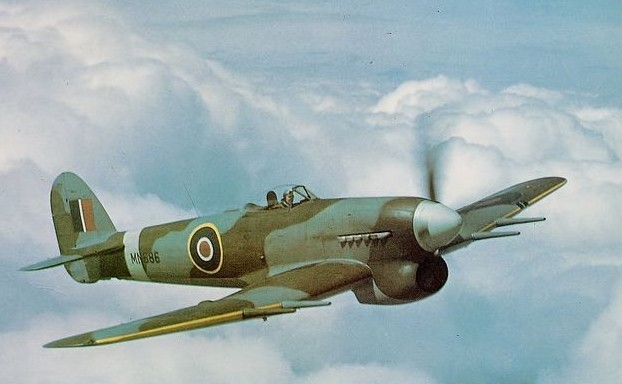

País: Reino Unido
Tipo: Caça-bombardeiro / Avião de ataque ao solo
Fabricante: Hawker Aircraft
Ano: 1941
Velocidade máxima: 663 km/h
Alcance: 821 km
Teto de serviço: 10.731 m
O Hawker Typhoon começou sua carreira como um caça de superioridade aérea problemático e quase foi cancelado — mas se reinventou como o mais devastador avião de ataque ao solo dos Aliados. Com seus foguetes RP-3 sob as asas, tornou-se o pesadelo da Wehrmacht na Normandia em 1944, destruindo colunas de tanques, trens e comboios com uma precisão e potência de fogo sem precedentes na aviação aliada.